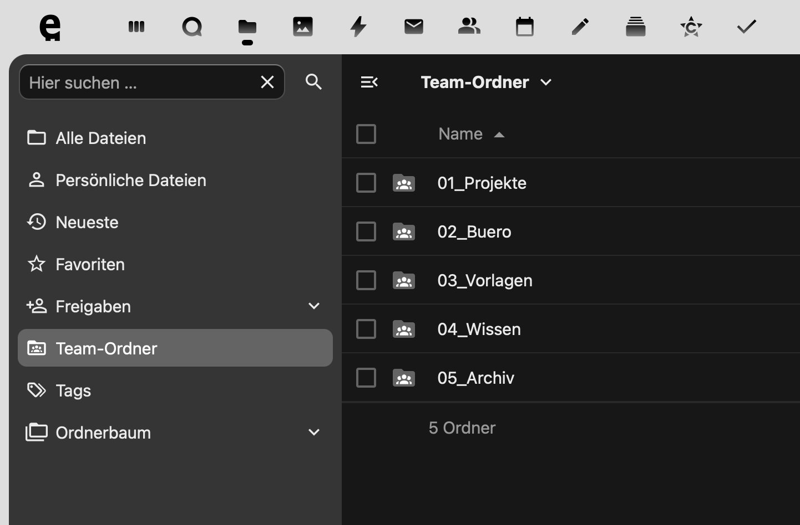

Nextcloud für Architekturbüros
Aufsetzen eines eigenen Nextcloud-Servers für ein Architekturbüro (Schwär Architektur) — Open Source statt teurer SaaS-Cloud, dem Büro selbst gehörend und individuell auf dessen Arbeitsweise zugeschnitten.
Alle gängigen Verknüpfungen (Kalender, Dateiablage, Projektorganisation) sind so eingerichtet, dass die Büroinhaberin sie selbst einfach anpassen und verwalten kann — ohne auf externe IT angewiesen zu sein.
Mittlerweile ist eine KI direkt an die Datenbank angebunden. Sie läuft in der Cloud, aber in Deutschland gehostet, und nutzt ausschließlich Open-Source-Modelle — es werden also keine Daten an Dritte versendet.
Damit dient der Server auch als Grundlage für das Controlling des Büros — etwa zur Kostenübersicht laufender Projekte.
